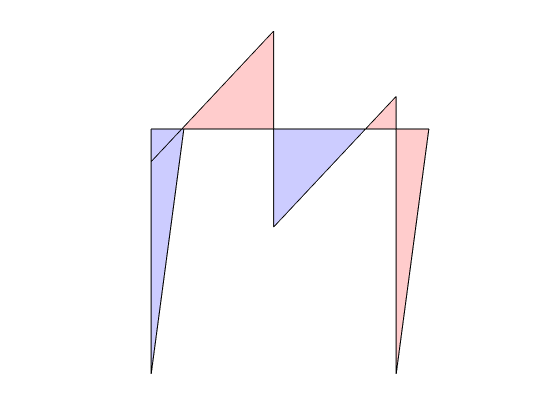

HW-3 Problem 3

The purpose of the structural model in Fig. is the study of the risk of a mid-rise building forming a soft first-story collapse mechanism under the combined action of a total gravity load and a lateral load. The latter is assumed to be linearly distributed over the height of the building with a resultant located at a distance above the first floor. The building has a single bay of length and the height of the first story is 12 feet. The ratio of is The first story columns consist of steel sections with Grade 50 Steel and are pinned at the foundation. The first story columns can be assumed restrained against rotation at the top, since they frame into a girder that can be assumed to be infinitely rigid in flexure. The girder and columns can be assumed to be inextensible.
3.1 - AISC H2
Verify the maximum lateral force that the first story can resist for an ultimate load factor under the assumption that the gravity load is negligible relative to the lateral load using the diamond shaped plastic limit surface in Fig. 4.6 of the course reader (AISC Equation H2-1).
CleanStart
LimEqn = 'AISC-H2';
beta = 0;
Ph = 217.67;
[lamc,Qc] = hw3p3(beta,LimEqn,Ph,true);
lamc
Optimal solution found.
lamc =
2.0000

3.2 - AISC H1
How much can the maximum lateral force be increased by using the -M plastic limit surface of the AISC specification in equation 4.7 of the course reader?
CleanStart
LimEqn = 'AISC-H1';
beta = 0;
Ph = 236.64;
[lamc,Qc] = hw3p3(beta,LimEqn,Ph);
lamc
Optimal solution found.
lamc =
2.0000
3.3 - Vertical Load
Repeat the preceding questions for the case that the gravity load is equal to of the lateral load under the assumption that it remains constant during the application of the lateral load and is, therefore, assigned an ultimate load factor of 1.2.
3.3.1
CleanStart
LimEqn = 'AISC-H2';
beta = 1/2;
Ph = 217.67;
[lamc,Qc] = hw3p3(beta,LimEqn,Ph);
lamc
Optimal solution found.
lamc =
2.0000